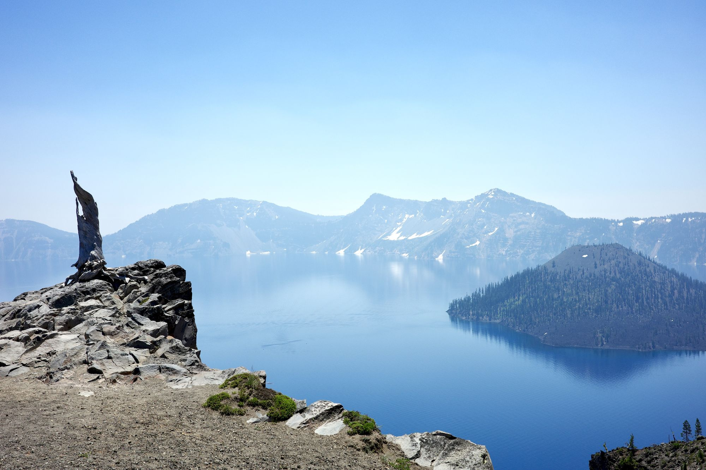
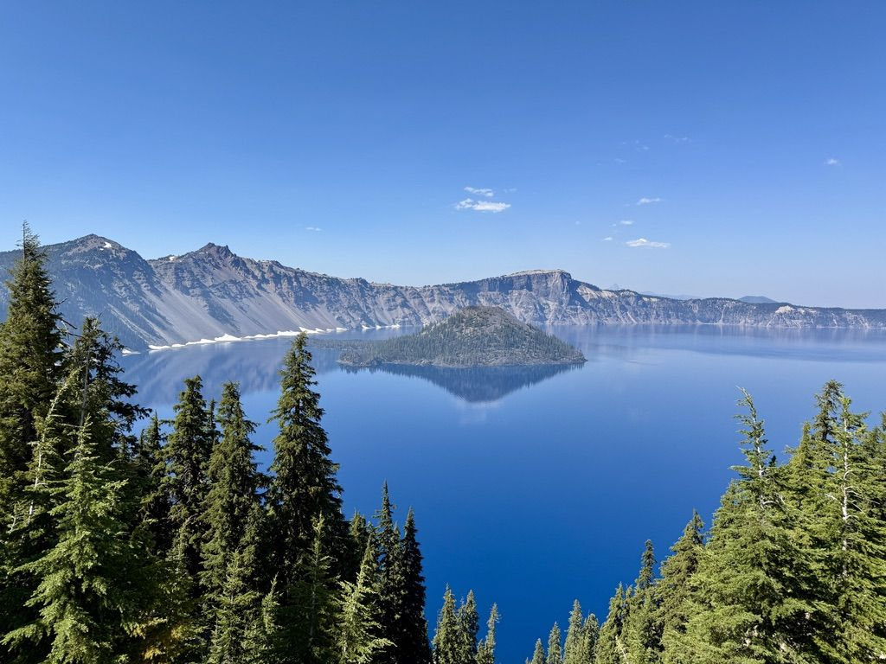

64 NPS Project
The archive
Stages
Parks

1 · Photo.
[Caption, location, site year]
Parks
/ Crater Lake National Park
Park record
Crater Lake National Park
Status
Photo added. The idea sketch, captions and visit details are still to come. The stamp design is in development.
At a glance
Idea sketch and stamp design
[Idea sketch]
2 · Idea sketch
Not added yet.
[Stamp design]
3 · Stamp design
In development.
Field photographs
More from the visit

[Caption, location, site year]
Field information
Visit details
Visits
[Number of visits]
Site year
[Year] (labeled “site year” until records are verified)
Conditions
[Season, weather, time of day]
Stamp status
In development
Back to all parks